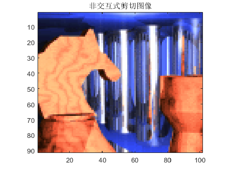
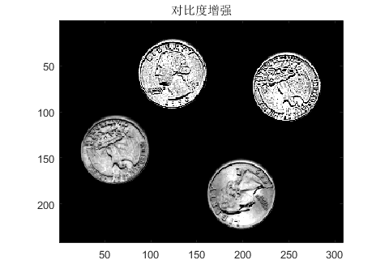

实验一 Matlab中对图像的简单操作
查看详情
实验目的：
1、了解图像处理工具箱函数可完成的主要功能；
2、掌握Matlab中的图像类型；
3、掌握Matlab中的图像文件读写、显示、类型转换的有关函数。
2、获取 'ngc6543a.jpg'的图像信息
3、在4个窗口中分别显示4幅不同类型的图像
4、将多帧图像阵列mri.mat的所有帧图像以方阵形式显示在同一图像窗口
5、使用zoom和colorbar命令
6、分别用imread和load命令显示两幅图像在同一个图像窗口
7、使用dither、gray2ind、grayslice、ind2gray、rgb2gray、rgb2ind、im2bw、ind2rgb、mat2gray编写9个函数
2、掌握Matlab中的图像类型；
3、掌握Matlab中的图像文件读写、显示、类型转换的有关函数。
实验要求：
1、读入图像文件并用 “whos”在命令窗口显示其图像内容2、获取 'ngc6543a.jpg'的图像信息
3、在4个窗口中分别显示4幅不同类型的图像
4、将多帧图像阵列mri.mat的所有帧图像以方阵形式显示在同一图像窗口
5、使用zoom和colorbar命令
6、分别用imread和load命令显示两幅图像在同一个图像窗口
7、使用dither、gray2ind、grayslice、ind2gray、rgb2gray、rgb2ind、im2bw、ind2rgb、mat2gray编写9个函数
实验结果：


实验二 数字图像读取及色彩、亮度、对比度变化
查看详情
实验目的：
了解数字图像的存储格式，并学会对图像的某些视觉特性做简单处理。
2、访问R、G、B通道，改变数字图像的色彩并显示改变后的图像；
3、将数字图像的RGB表示转换为HSI格式表示；
4、访问H、S、I通道，改变数字图像的色调、饱和度和密度并显示改变后的图像。
实验要求：
1、访问数字图像的RGB三个通道的对应矩阵，分别显示R、G、B的图像；2、访问R、G、B通道，改变数字图像的色彩并显示改变后的图像；
3、将数字图像的RGB表示转换为HSI格式表示；
4、访问H、S、I通道，改变数字图像的色调、饱和度和密度并显示改变后的图像。
实验结果：


实验五 Matlab中的图像增强
实验目的：
1、掌握Matlab中的图像的几何操作；
2、掌握Matlab中的图像像素值及其统计函数；
3、掌握Matlab中的图像平滑锐化操作函数；
4、掌握Matlab中的二维滤波器设计函数；
5、掌握Matlab中的图像局部增强函数。
2、将索引图像‘flowers.mat’进行旋转；
(1) 顺时针旋转30°；
(2) 逆时针旋转60°；
(3) 逆时针旋转90°；
(4) 用参数'crop'逆时针旋转60°。
3、将索引图像chess.mat进行剪切；
(1) 交互式剪切；
(2) 非交互式剪切；
4、编写一个图像增强的综合程序：对一给定灰度图像‘pout.tif’进行增强处理。
(1).添加椒盐噪声
(2).中值滤波
(3).图像增亮
(4).增加对比度
(5).直方图均衡化
5.用图像局部增强函数对一给定图像'eight.tif'中进行如下操作
(1).灰度求反;
(2).图像变暗;
(3).降低对比度后选择明暗交界处的一部分进行滤波。
实验要求：
1、将索引图像‘wmandril.mat’调整大小；2、将索引图像‘flowers.mat’进行旋转；
(1) 顺时针旋转30°；
(2) 逆时针旋转60°；
(3) 逆时针旋转90°；
(4) 用参数'crop'逆时针旋转60°。
3、将索引图像chess.mat进行剪切；
(1) 交互式剪切；
(2) 非交互式剪切；
4、编写一个图像增强的综合程序：对一给定灰度图像‘pout.tif’进行增强处理。
(1).添加椒盐噪声
(2).中值滤波
(3).图像增亮
(4).增加对比度
(5).直方图均衡化
5.用图像局部增强函数对一给定图像'eight.tif'中进行如下操作
(1).灰度求反;
(2).图像变暗;
(3).降低对比度后选择明暗交界处的一部分进行滤波。
实验结果：

